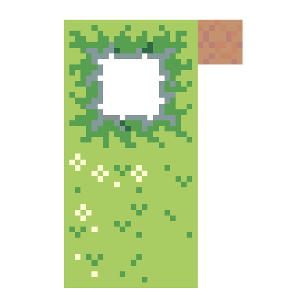

Self-guided passion project. Black Forest Cafe is a Roguelite
Restaurant adventure with procedurally generated dungeons and
fast-paced combat created with Unity. All aspects of game creation,
including pixel art, programming in C#, and design were taught and
done solely by myself. Everything present was created and learned in
two months.
My goal was ambitious but unrealistic: I wanted it to be the
perfect procedurally-generated coop adventure you could play with your
sibling on a Friday night, yet lacked even the basics of game
development. I had no experience in C#, Unity, or game design, yet
this did not deter my efforts. Over the next two months, I slogged
through numerous hours of YouTube tutorials, documentation-reading,
and Chat-GPT prompting.
Despite its challenges, the learning process was addicting, providing
a little victory every time a new feature was implemented, such as an
inventory system, enemy pathfinding, and depth-based procedural
generation. As I persevered, my understanding of Unity exponentially
improved, constantly rewriting and restructuring my code more
efficiently. My success has motivated me to expand my self-taught
skills in a perpetual pursuit of knowledge.
THE FIRST DAY
Despite having no experience in C#, my knowledge of C++ applied to its
base concepts, allowing me to learn its syntax quickly and create a
lot of scripts. Additionally, my work in general was extremely fast,
solely driven by my passion for game development. My assets were
created through Photoshop, while my code was learned through YouTube
tutorials and logic. Within the first day of working on the project, I
created the following:
Player sprite Animated walking sprites Tilesets Entity
shadow system Sprite atlas

THE SECOND DAY
I was fully committed to creating the game. This was my progress for
the following day:
Animated idle, running, dash Created tree sprites
Finished shadow code Created slime enemy sprite and ai
Created health system Fixed arrow aiming and projectile
shadow offset correctly Created tree prefab for hiding behind
player correctly Created program which makes tree transparent
Created player taking damage Created player shooting
animation
PROCEDURAL GENERATION
The entire third day was dedicated to learning how to procedurally
generate a dungeon and implementing it into the game. I used a mix of
random walk generation, scriptable objects for room presets, and a
rudimentary form of a binary tree to record dungeon depth while also
guaranteeing a fair layout.
The left image is the earliest form of the dungeon. The right image is
the polished version.
The next week consisted of implementing the following features:
Item generator script
Sprites of necklaces, barrels, and treasure chests
Interactable treasure chest
Different floor tiles generator
'Nearest' script that checks for nearest tagged objects to origin
position
Auto attack
Included barrels into auto attack
INVENTORY SYSTEM
I began working on the inventory system over the next week after I
compeleted my randomized drop script. However, I underestimated how
difficult it would be. An overlooked pointer issue caused significant
issues for me, triggering a frustrating memory leak and all items to
be added in the same place.
I was finally able to fix it because my more experienced friend
noticed I wasn't creating a new instance of item, an apparently common
problem among his peers. I was really relieved with his help since I
felt like I checked everything in my scripts and still couldn't solve
the issue. It still set me back more time than I would've liked.
COMBAT TWEAKS
I added a new enemy and a distinction between the two types: ranged
and melee. I also added a damage flash upon the enemy getting hit.
This feature was also surprisingly frustrating to implement, because
the default colour "White" in Unity just renders the sprite in its
original colour. I had to develop my own materials and shaders in
order to solve the problem.
The new enemy was a purple bat. I reused a bit of the other projectile
code but had to change the aggro system since the animations always
played in sync. The main way I solved this was creating group aggro,
where I would assign each entity a number when generated and reference
the number from the list to trigger the aggro. Unfortunately, I didn't
develop the animation stagger in the video.
GAME DESIGN DOCUMENT
This game design document is the culmination of two months of
dedicated work and design. It contains the basic concept, key
features, procedural generation algorithms, and art direction
document. Additionally, you can view the Devlogs linked below. It
contains all the recorded progress and problems I ran into during
production.